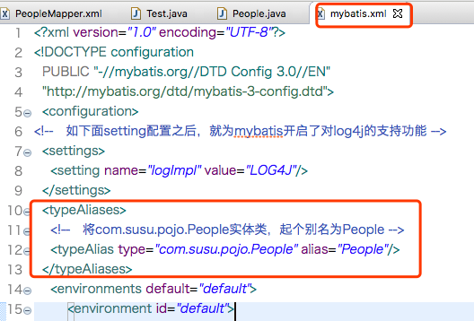
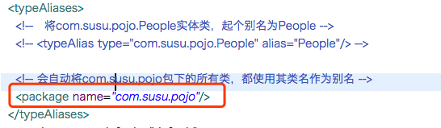
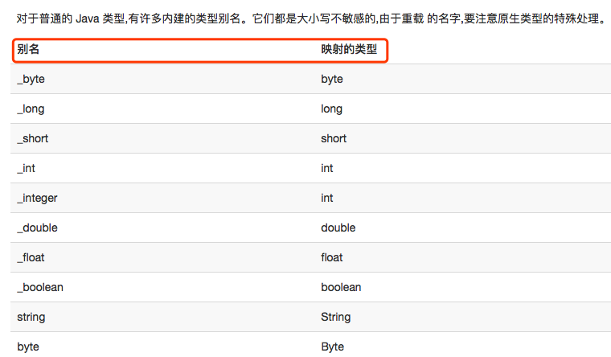

在MyBatis引用类，可以有3种方式，下面逐一介绍。一般来说使用第3重。
在mapper.xml文件中，比如如下的配置：
</select>
<select id="selById2" resultType="com.susu.pojo.People" parameterType="com.susu.pojo.People">
select * from people where id = #{id}
</select>可见，参数类型和返回值类型都是com.susu.pojo.People，每次都要写这么长长的一串，并且如果mapper.xml中频繁的应用到com.susu.pojo.People，就会非常麻烦。
MyBatis提供了别名的全局配置。如下，在mybatis.xml这个全局配置文件中，做如下配置：

如此，之后再mapper.xml文件中，就可以只要做如下配置即可：
</select>
<select id="selById2" resultType="People" parameterType="People">
select * from people where id = #{id}
</select>但是上面这种方法，如果项目中有50个实体类，那么mybatis.xml配置文件中就需要写50个像下面这样的配置。
<typeAlias type="com.susu.pojo.People" alias="People"/>这样同样太麻烦了。因此，可以在mybatis.xml全局配置文件中，做如下配置

如此一来，当mapper.xml配置文件中，要用到com.susu.pojo.People实体类时，就只要写people就可以了。
综上可知，MyBatis别名存在的主要意义就是简化开发。
此外，系统还有内置别名：把类型全小写，比如java中Map的别名是map
